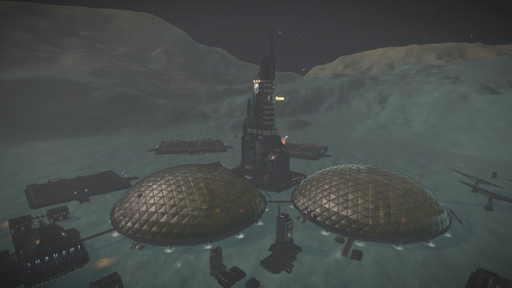

Starship Enterprises corp established the “Earth’s Inheritance” Wildlife Reserve in 3303 in order to bring more commerce and tourists into the system on LP 339-7 4 a.
The park features many examples of old Earth animal and plant species in two specially crafted bio domes. In addition the facility offers a state of the art tourism center and subterranean industrial complex.
In addition to the park, the facility also houses a full starport.

Starship Enterprises raised the necessary materials for the construction of the park, along with ensuring the protection of those bringing the materials in, through appeals to the wider community.